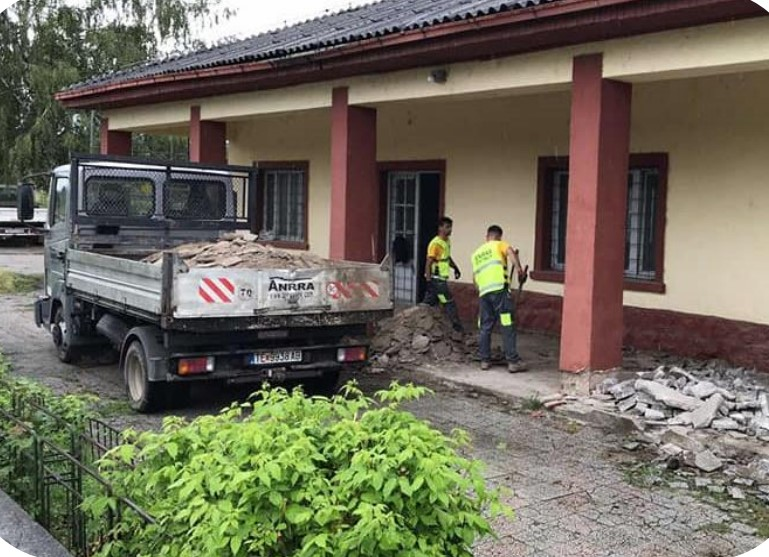
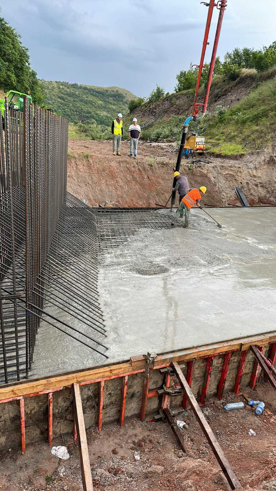

Проект: Реконструкција на железничката станица во Тетово.
Договорен орган: Јавно претпријатие Железници на Република Северна Македонија
Опис на проектот:
Железничката станица се наоѓа на влезот во Тетово.
Проектот опфати целосна реконструкција на објектот, новата фасада, на
изградба на нова санитарна средина, новиот покрив, асфалтирање на паркингот,
замената на вратите и прозорците, нов електричен систем и изградбата
на тротоарите и паркот.
Завршени проекти



Проект: Изградба на мостови во Руга е Арберит АЛБАНИЈА
Договорен орган: Министерство за инфраструктура и енергетика
Опис на проектот:
Изградба на некои делови од мостови на меѓународниот автопат Руга е Арберит
во АЛБАНИЈА.


Проект: Рехабилитација на коритото и мостот на МРЖЕНСКА река.
Договорен орган: Јавно претпријатие Железници на Република Северна Македонија
Опис на проектот:
Мрзенскиот мост се наоѓа над Мрзенска река во Источна Македонија и служи за
преминот на возот.
Овој проект опфати реконструкција на мостот и коритото на реката, со поставување камени габиони
коритото на реката и изградба на заштитен ѕид.


Проект: Изградба и завршување на преостанатите работи од вториот
делница, Бељаковце - Крива Паланка, Коридор VIII.
Договорен орган: GÜLERMAK AĞIR SANAYİ İNŞAAT VE TAAHHÜT A.Ş - Република Турција
Опис на проектот: Давател на услуги
Пристапни патишта, градежни работи во пропусти, подвозници, надвозници, мостови.
